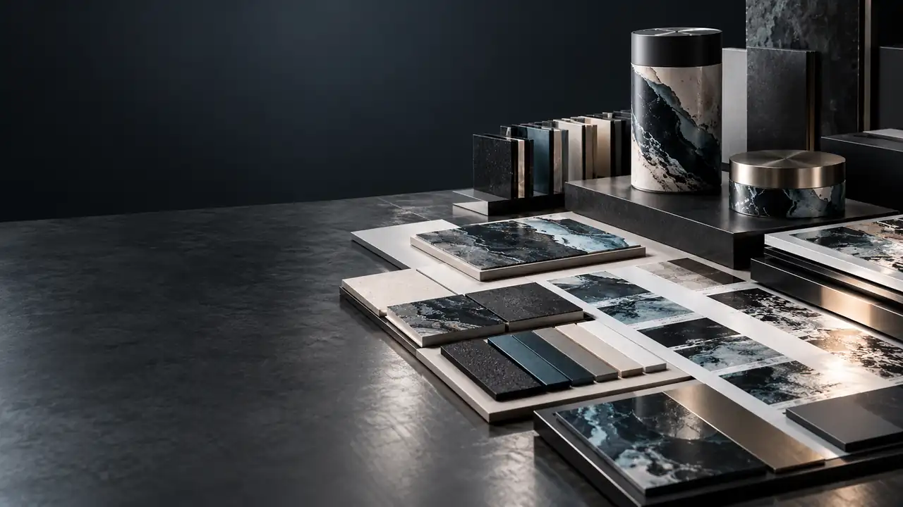

HDC / SURFACE LAB
Surface
Lab
Start with the object and surface,
not the machine.
SURFACE STUDY / MATERIAL, FINISH, APPLICATION

01 / DECISION LOGIC
OBJECT → RECOMMENDATION
Define the
job before
the route.
The page is organized around what the object is,
what its surface is, and how it will be used.
01 / OBJECT — Identify the physical item before considering a production route.
02 / MATERIAL NAVIGATOR
8 SURFACE FAMILIES
Choose
the closest
surface family.
Each material remains assessment-led until the exact surface, finish and use case are confirmed.
8 material families available.
03 / MATERIAL RECORD
SURF-GLASS-001
Loading material record…
04 / COMPARE MATERIALS
SELECT 2–3 MATERIALS
UNKNOWN OR UNCERTAIN
Not sure what the surface is?HDC reviews the physical object first rather than guessing a substrate or process from appearance alone.
Send for review